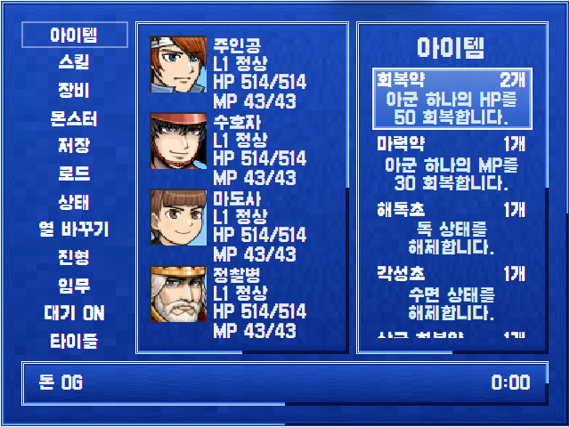
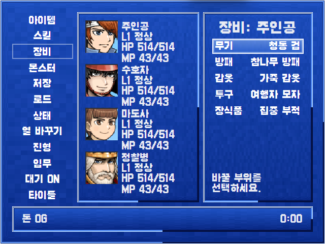

주인공 L1
Executive summary
“레트로”가 아니라 “미정리”다
지금 메뉴는 엔진이 가진 기능 13개를 전부 같은 크기·같은 색·같은 자리에 세워 둔 목록이다. 플레이어에게 “무엇을 먼저 눌러야 하는가”를 알려주는 장치가 단 하나도 없다.
- 구조 결함(P0) — 아이템/스킬(상시 사용)과 저장/타이틀(세션 종료)이 동일 위계. 파괴적 액션에 분리선도, 확인 단계 시각화도 없다.
- 가독 결함(P0) — HP/MP가 숫자뿐. 게이지가 없어 파티 4명 상태를 한눈에 못 읽는다. 캡처에서
514/514가 4번 반복돼 노이즈가 된다. - 공간 배분 결함(P1) — 파티 패널이 중앙 1/3을 점유하는데 담긴 정보는 4줄. 조작 대상인 아이템 리스트는 우측 1/3에 갇혀 6번째 항목이 잘렸다.
- 의사결정 정보 부재(P1) — 장비 화면에 스탯 델타가 없다. JRPG 메뉴의 존재 이유가 빠져 있다.
- 일관성 결함(P2) — 전투 UI는
[data-battle-skin]으로 12종 스킨을 갈아입는데, 메뉴는 RM2003 1종 하드코딩. 포켓몬 스킨으로 싸우다 메뉴를 열면 톤이 붕괴한다.
아래 개선안은 RPG Maker와 동일해질 필요 없다는 전제를 적극적으로 사용한다. 다만 픽셀 폰트·창 스킨·커서 개념 같은 “장르 약속”은 유지한다 — 그것까지 버리면 레트로 JRPG가 아니게 된다.
Evidence
현재 화면 — 실제 캡처

1
2
3
아이템 — ① 13개 평면 명령 레일 ② 숫자만 반복되는 파티 패널 ③ 6번째 항목(
사금 부적…) 클리핑
4
5
장비 — ④ 슬롯 5개 표시 후 나머지 공간이 그냥 비어 있음 ⑤ 스탯 델타 없이 “바꿀 부위를 선택하세요”만
①아이템·스킬·장비·몬스터·저장·로드·상태·열 바꾸기·진형·임무·대기 ON·타이틀 — 12~13행. RM2003 원본은 6~7행이었다. 행 높이가
15px 고정이라 항목이 늘면 잘린다(tabs-b-status-menu-base.css의 주석이 이미 이 사고를 기록하고 있다).②이름/레벨+상태/HP/MP 4줄 × 4명. 전원 만피일 때 정보량은 실질 0에 가까운데 화면 폭
120px(논리)을 상시 점유한다.③스크롤 가능하지만 스크롤 어포던스가 얇은 막대뿐이고, 마지막 행이 “잘린 글자”로 끝나 버그처럼 보인다.
Findings
결함 12건 — 근거와 함께
1
P0명령 13개가 위계 없이 평면 배치
행동(아이템/스킬/장비) · 파티 편성(상태/열/진형/몬스터) · 기록(임무/관계) · 시스템(저장/로드/대기/타이틀)이 같은 시각 무게로 섞여 있다. 특히 타이틀로 돌아가기는 진행 손실 위험이 있는 액션인데 “진형” 바로 아래에 붙어 있다.
근거 — playerStatusMenuModel.ts:8 STATUS_MENU_COMMAND_IDS 13개를 renderCommandRail이 평면 <nav>로 그대로 나열.
2
P0HP/MP 게이지 없음 — 숫자만
파티 상태 파악이 “네 줄을 읽어서 분수를 비교하기”가 된다. 위급한 아군을 한눈에 못 찾으므로 회복 아이템 대상 선택이 느려진다. 색상 임계(안전/경고/위험)도 없다.
근거 — playerStatusMenuModel.ts:88 hpLabel: `${hpTerm} ${vitals.hp}/${vitals.maxHp}` 문자열만 만들고, CSS에 게이지 규칙이 없다.
3
P0활성 포커스가 어디인지 애매
좌측 레일 선택 항목과 우측 리스트 선택 항목이 둘 다 박스로 그려진다. 구분은 테두리 투명도 차이(0.9 vs 0.42)뿐이라, 캡처에서 “아이템”과 “회복약” 중 어느 쪽이 키 입력을 받는지 즉시 판별되지 않는다.
근거 — tabs-b-status-menu-base.css:39-44. 비활성 커서를 border-color 알파만 낮춰 표현.
4
P0리스트 마지막 항목 클리핑
아이템 6번째 행이 잘린 글자로 끝난다. -webkit-line-clamp:3 + 고정 행 높이 + overflow:hidden이 겹친 결과. 스크롤 가능함을 알리는 신호가 없어 “여기서 끝”으로 오독된다.
근거 — 캡처 items.png 하단 실측. tabs-b-status-menu-main.css:143-157.
5
P1화면 공간 배분이 역전됨
정보량이 적고 상시 필요하지 않은 파티 패널이 120px을 고정 점유하고, 실제 조작 대상인 리스트가 남은 폭을 쓴다. 그 결과 아이콘·이름·개수·설명이 한 줄에 못 들어가 설명이 아래로 접히고, 접힌 설명이 다시 3줄 클램프로 잘린다.
근거 — tabs-b-status-menu-base.css:50 grid-template-columns:120px minmax(0,1fr).
6
P1장비 스탯 델타 부재
“청동 검 → 강철 검”으로 바꿀 때 공격력이 얼마나 바뀌는지 화면에 없다. 플레이어는 값을 모른 채 장비를 고른다. 이건 스타일이 아니라 기능 누락이다.
근거 — 캡처 equipment-detail.png. 슬롯명+현재 장비명만 표시.
7
P1아이콘 0개 — 전부 텍스트
.status-menu-entry-icon(18px) 클래스가 CSS에 이미 정의돼 있는데 아이템/스킬/장비 행에서 쓰이지 않는다. 종류 구분이 글자 읽기에만 의존해 스캔 속도가 느리다.
근거 — tabs-b-status-menu-base.css:92-116에 규칙 존재, 캡처에는 미적용.
8
P1정렬 리듬 붕괴
아이템 이름은 좌측 정렬, 개수는 우측 정렬인데 설명문은 가운데 정렬로 흐른다. 세 축이 섞여 시선이 좌↔우로 튄다. 가운데 정렬을 택한 이유가 없다.
근거 — 캡처의 “아군 하나의 HP를 / 50 회복합니다.” 중앙 배치.
9
P1“상태” 정보가 실질적으로 비어 있음
모든 액터의 상태가 하드코딩 문자열 "정상"이다. 상태 이상 시스템이 있어도 메뉴에는 반영되지 않는다.
근거 — playerStatusMenuModel.ts:86 condition: "정상".
10
P2매 입력마다 전체 DOM 재생성
replaceMenu가 패널을 remove() 후 새로 append한다. 그래서 (a) 트랜지션/애니메이션을 붙일 수 없고, (b) 스크롤 위치가 날아가고, (c) 커서 인덱스를 detailCursors Map으로 수동 복원하는 부채가 생겼다. 이미 runtimeJuice에 motionClass·SFX가 정의돼 있는데도 모션이 붙을 대상이 매번 사라진다.
근거 — playerStatusMenuController.ts:56-60, runtimeJuice.ts RUNTIME_JUICE_SPECS.
11
P2메뉴 스킨 시스템 없음
전투는 system.battleUiStyle → [data-battle-skin]으로 12종(포켓몬·옥토패스·마더·드퀘…)을 갈아입는다. 메뉴에는 대응물이 없어 같은 게임 안에서 전투와 메뉴의 톤이 어긋난다.
근거 — src/battle/skins/registry.ts 12종 vs tabs-b-title-screen.css:264 .rm2k3-status-menu.main-menu 단일 테마.
12
P2푸터가 컨텍스트를 낭비함
하단 바가 돈 0G와 0:00만 담고 가운데 메시지 영역은 대개 빈칸이다. 조작 안내(결정/취소 키), 현재 위치, 진행 중 목표를 놓을 최적의 자리인데 비워 두고 있다.
근거 — playerStatusMenu.ts:219-244 renderFooter.
Proposal
목업 3종 — 렌더해서 비교
아래는 모두 실제 런타임과 같은 4:3(320×240 논리) 비율로 CSS 렌더한 것이다. 폭이 달라져도 비례가 유지되므로 실제 화면에서의 밀도를 그대로 판단할 수 있다.
목업 A — 보수안: 구조만 고친다 (RM2003 룩 유지)변경 범위: 레일 그룹화 + 게이지 + 포커스 감광 + 아이콘. 레이아웃 골격은 그대로
수호자 L1
마도사 L1
정찰병 L1
아이템
♥회복약2
✧마력약1
☘해독초1
☘각성초1
◇사금 부적함1
◇낡은 지도1
♥고급 회복약3
☘해열초2
◇여관 열쇠1
✧정신의 물1
◈전투 식량4
▼
고친 것
· 명령 13 → 그룹 3개(행동/파티/시스템) + 구분선
· 타이틀을 붉은 톤으로 분리 — 파괴적 액션임을 시각화
· HP/MP 게이지 + 임계 색상. 마도사가 위험하다는 걸 0.2초에 읽는다
· 커서에 발광 + ▶ 마커. 비활성 패널은 감광(opacity .5)
· 아이콘 도입, 설명은 푸터로 이동 → 리스트 행이 1행으로 압축돼 11항목이 잘림 없이 보인다(현재는 5.5항목)
남은 한계
· 리스트 폭은 여전히 좁다. 긴 아이템명은 말줄임
· 파티 패널이 아이템·장비 화면에서도 상시 점유
· 저장/로드가 “시스템”에 묶여 접근이 한 단계 깊어진 느낌
비용
CSS + 렌더 함수 국소 수정. replaceMenu 구조 유지 가능.
가장 싸고, 회귀 위험이 낮다. 기존 e2e testid를 거의 그대로 쓴다.
목업 B — 권장안: 2열 작업영역 (파티는 필요할 때만 승격)레일+파티를 좌측 한 덩어리로 통합, 우측 전체를 작업 영역으로
행동
◈아이템
✦스킬
⚔장비
파티
주인공 L1
수호자 L1
마도사 L1
정찰병 L1
기록 · 시스템 ▸
아이템 11종
♥회복약아군 1명 HP 50 회복×2
✧마력약아군 1명 MP 30 회복×1
☘해독초독 상태 해제×1
☘각성초수면 상태 해제×1
◇사금 부적함전투 후 획득금 +10%×1
◇낡은 지도사용 불가×1
♥고급 회복약아군 1명 HP 200 회복×3
☘해열초화상 상태 해제×2
◇여관 열쇠이벤트 전용×1
✧정신의 물아군 전체 MP 20 회복×1
◈전투 식량야영 시 HP 전체 회복×4
고친 것
· 리스트 폭이 약 2배 → 이름 + 효과 + 개수가 한 행에 들어간다. A와 같은 11항목을 보여주면서 효과 설명까지 동시에 읽힌다(A는 설명이 푸터에 하나씩만)
· 파티가 좌측 레일과 한 창에 통합돼 “대상 선택” 시 그 자리에서 커서가 파티로 내려간다(패널 이동 없음)
· 기록·시스템은 서브메뉴(▸)로 접어 상시 노출 항목을 10개 이하로
· 푸터를 조작 안내로 활용
트레이드오프
· 저장/타이틀이 한 단계 깊어진다 → 자주 쓰는 저장은 Shift+S 같은 단축이나 시스템 그룹 최상단 고정으로 보완
· 파티 HP/MP를 한 줄로 줄여 MP 게이지 생략 → 상태 화면에서 상세 제공
· 기존 e2e testid 중 status-menu-party-row-* 위치 기대가 깨질 수 있다
비용
렌더 함수 재구성 + CSS 그리드 변경 + 서브메뉴 상태 추가. e2e 일부 갱신 필요.
구조적 이득이 가장 크다. A를 먼저 하고 B로 진행하는 경로도 성립한다.
목업 C — 장비 화면: 스탯 델타를 넣으면 이렇게 된다결함 6번의 해소안. 레이아웃은 목업 B를 그대로 사용
장비 · 주인공
무기청동 검
방패참나무 방패
갑옷가죽 갑옷
투구여행자 모자
장식품집중 부적
변화
공격42
방어28 → 35 (+7)
민첩31 → 29 (−2)
정신24
방패 후보 3종
◇참나무 방패착용 중방어 +6
◈강철 방패무게 있음방어 +13
✦부적 방패마법 저항방어 +4
✕탑주의 대방패장착 불가 — 클래스 제한
강철 방패 — 방어가 올라가지만 민첩이 내려간다. 선회 속도가 중요한 파티라면 부적 방패를 고려하라.
핵심좌측 “변화” 블록이 커서를 올린 후보로 갱신된다. 올라가는 값은 초록
↑, 내려가는 값은 빨강 ↓. 변하지 않는 스탯은 델타를 그리지 않아 시선이 변화에만 간다.부수장착 불가 항목은 감광 + 사유 표시(“클래스 제한”). 지금은 후보 목록에서 아예 감춰지거나 이유 없이 실패한다.
Interaction
포커스 모델 — 규칙 3개로 고정
결함 3번(활성 포커스 애매)은 CSS 알파값 조정으로 해결되지 않는다. 규칙이 필요하다. 마침 전투에서 최근 같은 문제를 이미 풀었다 — 커밋 4a1930e9가 “선택 중 HUD 감광 + 선택 적 블링크”를 도입했다. 같은 규칙을 메뉴에 이식하면 전투/메뉴 조작 감각이 통일된다.
규칙 1 — 활성은 하나
키 입력을 받는 패널만 .is-active. 활성 패널의 커서는 발광 + ▶ 마커 + 1.2초 주기 블링크.
비활성 패널의 커서는 테두리 없는 잔상(배경만 살짝)으로 남긴다 — “돌아가면 여기”를 알려주되 경쟁하지 않는다.
규칙 2 — 비활성은 감광
비활성 패널 전체에 opacity:.5. 알파 미세 조정이 아니라 명백한 밝기 차이로 계층을 만든다.
전투 타깃 선택과 동일한 처리 → 학습 전이가 일어난다.
규칙 3 — 깊이는 가로 이동
레일 → 리스트 → 대상 선택이 왼쪽에서 오른쪽으로 진행되고, X(취소)는 항상 한 단 왼쪽으로 되돌린다.
지금은 mode: "main" | "function" 2단뿐이라 3단 이상(장비→슬롯→후보)에서 되돌림 지점이 모호하다.
포커스 규칙이 없으면, 커서를 예쁘게 만드는 모든 작업이 낭비된다. 규칙을 먼저 정하고 그 다음에 그린다.
Consistency
메뉴 스킨 — 전투가 이미 만들어 둔 길을 쓴다
전투는 system.battleUiStyle → root.dataset.battleSkin → [data-battle-skin="…"] CSS로 12종 스킨을 갈아입는다. 메뉴에도 동일 패턴을 적용하면 새 아키텍처를 발명하지 않고 톤 불일치를 없앨 수 있다.
| 항목 | 전투 (기존) | 메뉴 (제안) |
|---|---|---|
| 프로젝트 설정 | system.battleUiStyle | system.menuUiStyle — 기본값 "inherit-battle" |
| DOM 훅 | root.dataset.battleSkin | root.dataset.menuSkin |
| 레지스트리 | src/battle/skins/registry.ts 12종 | src/menu/skins/registry.ts — 우선 3종으로 시작 |
| 테마 변수 | --battle-window-bg / -edge / -text / -accent | 같은 4개 축을 --menu-*로. 값은 배틀 스킨에서 상속 가능 |
| 레이아웃 변형 | layout(sideview/frontview/…) | layout: rail-3col(목업 A) / rail-2col(목업 B) / fullscreen-cards |
최소 3종으로 시작하자. ① rm2003 — 지금 룩(호환·기본). ② vxace — 배틀 기본 스킨과 짝. ③ modern — 목업 B 레이아웃 + 낮은 채도 어두운 창. 12종을 한 번에 만들 필요 없다. 레지스트리만 열어 두면 스킨 추가는 CSS 파일 하나 붙이는 일이 된다.
Debt
기술 부채: 전체 재렌더를 먼저 끊어야 하는 이유
replaceMenu가 매 입력마다 패널을 remove()+append 하는 구조는 단순한 성능 문제가 아니다. 위 개선안 다수가 이 구조 때문에 물리적으로 불가능하다.
재렌더가 막고 있는 것
· 커서 이동 애니메이션 / 패널 슬라이드 인·아웃 — 대상 노드가 매번 사라진다
· runtimeJuice의 motionClass(juice-menu-select 등) — 붙는 즉시 노드가 교체된다
· 리스트 스크롤 위치 — 유실되어 detailCursors Map으로 수동 복원 중
· 장비 델타의 “커서 올린 후보로 즉시 갱신” — 전체 재렌더로는 과하다
최소 변경 경로
1. 패널 골격(레일/파티/작업영역/푸터)을 한 번만 생성하고 참조를 보관
2. 갱신을 4개 함수로 분리: updateRail / updateParty / updateWork / updateFooter
3. 커서 이동은 클래스 토글만 — attachCursorMenu가 이미 이 방식이므로 동일 패턴을 위로 끌어올리는 것에 가깝다
4. data-testid는 유지 → e2e 회귀 최소화
runtimeCursorMenu.ts의 attachCursorMenu는 이미 “선택 관리 + click 합성”만 하는 올바른 설계다. 문제는 그 위 계층이 매번 DOM을 버린다는 점이다. 아래 계층은 이미 준비돼 있다.
Roadmap
실행 순서 — 체감 대비 비용 순
P0-1
HP/MP 게이지 + 임계 색상
CSS + 모델 소폭파티 패널 4줄 → 이름·레벨 1줄 + 게이지 2개. 캡처의
514/514 반복 노이즈가 사라진다P0-2
명령 레일 그룹화 + 파괴적 액션 분리
모델 + 렌더 + CSS행동/파티/시스템 3그룹 + 구분선. 타이틀은 별도 색·최하단. 행 높이 고정 문제도 함께 해소
P0-3
포커스 모델 3규칙 적용
CSS 중심활성 커서 발광·▶·블링크 / 비활성 패널 감광 / 취소=왼쪽. 전투(
4a1930e9)와 규칙 통일P0-4
리스트 클리핑 제거 + 스크롤 어포던스
CSS + 렌더행을 1행으로 압축(설명은 푸터로), 더 있으면
▼ 표시. 잘린 글자로 끝나지 않게P1-1
목업 B 레이아웃(2열)으로 전환
렌더 재구성 + e2e 갱신리스트 폭 2배 → 이름+효과+개수 한 행. 기록·시스템은 서브그룹으로 접기
P1-2
장비 스탯 델타(목업 C)
계산 로직 + 렌더커서 올린 후보로 좌측 “변화” 블록 갱신. 장착 불가 사유 표시
P1-3
아이콘 도입 + 정렬 축 통일
렌더 + CSS기존
.status-menu-entry-icon 재사용. 가운데 정렬 폐기 — 좌(이름)/우(수량) 2축만P1-4
상태 이상을 실제로 반영
모델하드코딩
"정상" 제거, 세션 상태에서 읽는다P2-1
증분 렌더로 전환
컨트롤러 리팩터골격 1회 생성 + 4개 update 함수. 이후 트랜지션·juice 모션이 비로소 동작한다
P2-2
메뉴 스킨 레지스트리(3종)
신규 모듈 + CSSmenuUiStyle + [data-menu-skin]. 기본값은 배틀 스킨 상속P2-3
푸터를 컨텍스트 바로
렌더조작 안내 / 선택 항목 설명 / 현재 위치. 빈칸을 없앤다
P0 4건만으로도 “구닥다리” 인상의 대부분이 사라진다고 본다. 전부 CSS·렌더 국소 수정이라 목업 A 범위 안에서 끝나고, 기존 e2e testid를 유지할 수 있다. 목업 B/C는 그 다음 단계에서 판단하면 된다.
Decision needed
감독 결정이 필요한 갈림길
① 목업 A냐 B냐
A는 싸고 안전, B는 구조적으로 옳다. A → B 순차 진행을 권한다 — A의 결과물이 B의 부분집합이라 버려지는 작업이 없다.
② 저장 접근 깊이
B에서 저장이 서브메뉴로 들어간다. 저장을 최상위에 유지할지, 단축키로 보완할지.
③ 메뉴 스킨 우선순위
P2로 뒀지만, 전투 스킨 12종을 이미 판매 포인트로 쓰고 있다면 우선순위를 올릴 근거가 된다.